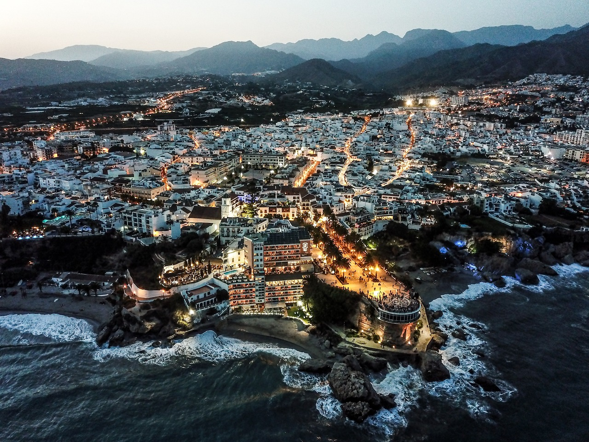

1. The Alcazaba is probably the most well-known tourist attraction in Malaga. Built in the 11th century by the Moors, this palace was both the home of Muslim rulers and a fortress to protect and defend the city from the Catholics. The site is very well preserved and maintained. During your visit you’ll discover the courtyards, patios, fountains and sumptuous gardens. As it’s built on a hill overlooking Malaga, it offers a lovely view over the sea and port. There’s also a small archaeological museum showcasing Moorish pottery and ceramics.
2.Another place you must visit in Malaga is Gibralfaro castle. From the Alcazaba, you can go to the castle on foot via a path offering great views over the city. It is however a bit steep, so if you prefer, you can take the bus #35 from the Avenida de Cervantes to go there. The castle was built in the 14th century to protect the Alcazaba. It had a barrack to house soldiers, as well as a lighthouse. That’s actually where the castle got its name from: Gibralfaro means “mountain of light”. There is a building right at the entrance to learn more about the history of the castle, but the visit is mainly worth it for the view over Malaga and the sea from the ramparts. On clear days it’s even possible to see the Strait of Gibraltar. It’s the best scenic view over the Malaga, and it’s also very nice at night with all the city lights.
